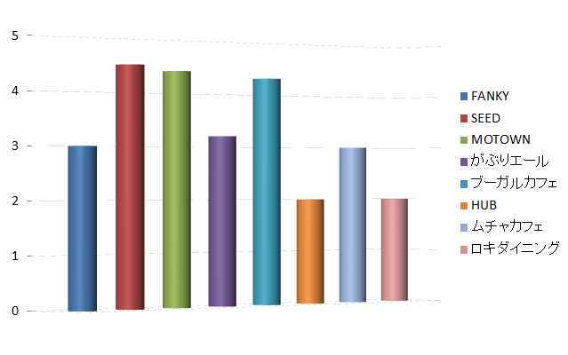

第一位！！！
第一位：SEED
栄光の第一位！入口からすでに別世界へ入り込むようなお店です！！そして店内は照明や音楽を上手く使いアップテンポな雰囲気を作り出しています！また、隣との席同士が近いため雰囲気と相まって、より、盛り上がるよう工夫されています。
>
第二位！！！
第二位：MOTOWN
皆でテーブル席を囲いゆっくり飲むのもよし、カウンターでしっぽり一人で飲むのもよし！MOTOWNも照明や音楽が上手く使われていて落ち着いた印象を与えていました。また、ダーツやビリヤード、ルーレットなどのカジノ風な雰囲気も出ていました。
第三位！！!
第三位：ブーガルーカフェ
見た目は民家のようで入りづらく、中も家のリビングのような作りなので最初は慣れないのですが、時間が経つにつれ居心地がよくなってきます！！またトランプやオセロの貸し出しも行っているため、非常にゆっくりしやすい場所です！
まとめ！！！
調査した全店舗のコストパフォーマンス別グラフ
